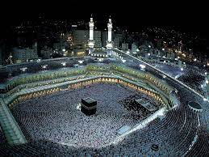

WEAVE
DESTINATION YOU ALWAYS REQUIRED
MY DAYS IN MACCA
 Islamic studies, as taught in the west, is a discipline that seeks to explain what the Islamic world has achieved in the past and what the future holds for it. Its past is indeed rich. In 732, a hundred years after the death of the Prophet Muhammad, the Arab conquests had created the greatest empire that the world had yet seen, stretching from central France to the borders of China. It was held together by the Islamic faith and by Arabic, the language of the Qur’an. The gilded world of the ninth-century Abbasid court – whose capital, Baghdad, rivalled Rome – is evoked in the stories of the Thousand and One Nights. Here the caliphs established an academy, the House of Wisdom, which served as a translation centre where Arabic versions (later produced also in Toledo, in Spain) were made of the masterpieces of Graeco-Roman, Persian and Indian culture in philosophy, literature, mathematics, astronomy, medicine and other fields of scientific learning. These works, saved from oblivion by the Arabs, reached the west, were translated into Latin and ultimately made the Renaissance possible. Muslim Spain, for example, was centuries ahead of the rest of Europe in its lifestyle; its capital, Cordoba, had street lighting, underground sewage, hot and cold running water, public baths and other amenities while other European cities were sunk in squalor. Moorish expertise in irrigation and agriculture made the gardens of Spain a byword for the arts of leisure. At the heart of the discipline of Islamic studies are the languages of that world and the investigation of Islam as a faith and a practical guide for everyday life. This involves close study of the Qur’an and the sayings of Muhammad. Beyond that, wide perspectives beckon, such as the workings of Islamic law, Sufism (Islamic mysticism), political thought, the major divisions of the faith (Sunnis and Shi‘ites), Arab, Persian and Turkish literature and the role of women. Islamic art produced carpets, luxury ceramics, precious miniature paintings and buildings of world renown like the Alhambra and the Taj Mahal. The grand sweep of Islamic history ,told by its own chroniclers, takes students from the rise of Islam and the life of the Prophet Muhammad, through to the first Arab dynasties and then further afield; to the later interplay between Arabs, Turks and Persians, to the Crusades, in which Muslims (here Saladin is the charismatic figure) and Crusaders co-existed, often harmoniously, and learned from each other in unexpected ways, and to the gunpowder empires of the early modern period – the Turkish Ottomans, the Persian Safavids and the Indian Mughals. The story is taken into modern times by studying how Muslims responded to the military and cultural encroachment of the West, achieving independence, and the roles they play in today’s globally interconnected world.
MY FRIST STEP IN A SEA BEACH
 The largest sea beach in the world, we Bangladeshi, are blessed with numerous beautiful sea beach in the world. Our world is filled with amazing natural beauties. The sea beach makes the overall natural landscape outstanding. In this highly researched article, we have tried to give you an overall concept of the sea beaches in Bangladesh. It will help you to make the decision when want to travel on an isolated sea beach with your friends and family.The largest sea beach in the world, we Bangladeshi, are blessed with numerous beautiful sea beach in the world. Our world is filled with amazing natural beauties. The sea beach makes the overall natural landscape outstanding. In this highly researched article, we have tried to give you an overall concept of the sea beaches in Bangladesh. It will help you to make the decision when want to travel on an isolated sea beach with your friends and family.The largest sea beach in the world, we Bangladeshi, are blessed with numerous beautiful sea beach in the world. Our world is filled with amazing natural beauties. The sea beach makes the overall natural landscape outstanding. In this highly researched article, we have tried to give you an overall concept of the sea beaches in Bangladesh. It will help you to make the decision when want to travel on an isolated sea beach with your friends and family.
The largest sea beach in the world, we Bangladeshi, are blessed with numerous beautiful sea beach in the world. Our world is filled with amazing natural beauties. The sea beach makes the overall natural landscape outstanding. In this highly researched article, we have tried to give you an overall concept of the sea beaches in Bangladesh. It will help you to make the decision when want to travel on an isolated sea beach with your friends and family.The largest sea beach in the world, we Bangladeshi, are blessed with numerous beautiful sea beach in the world. Our world is filled with amazing natural beauties. The sea beach makes the overall natural landscape outstanding. In this highly researched article, we have tried to give you an overall concept of the sea beaches in Bangladesh. It will help you to make the decision when want to travel on an isolated sea beach with your friends and family.The largest sea beach in the world, we Bangladeshi, are blessed with numerous beautiful sea beach in the world. Our world is filled with amazing natural beauties. The sea beach makes the overall natural landscape outstanding. In this highly researched article, we have tried to give you an overall concept of the sea beaches in Bangladesh. It will help you to make the decision when want to travel on an isolated sea beach with your friends and family.
MY FRIST STEP ON A HILL
 Himalayas, or Himalaya; Sanskrit: IPA, himá and ā-laya, are a mountain range in South and East Asia separating the plains of the Indian subcontinent from the Tibetan Plateau. The range has many of Earth's highest peaks, including the highest, Mount Everest, at the border between Nepal and ChinaThe Himalayas, or Himalaya; Sanskrit: IPA, himá and ā-laya, are a mountain range in South and East Asia separating the plains of the Indian subcontinent from the Tibetan Plateau. The range has many of Earth's highest peaks, including the highest, Mount Everest, at the border between Nepal and ChinaThe Himalayas, or Himalaya; Sanskrit: IPA, himá and ā-laya, are a mountain range in South and East Asia separating the plains of the Indian subcontinent from the Tibetan Plateau. The range has many of Earth's highest peaks, including the highest, Mount Everest, at the border between Nepal and ChinaThe Himalayas, or Himalaya; Sanskrit: IPA, himá and ā-laya, are a mountain range in South and East Asia separating the plains of the Indian subcontinent from the Tibetan Plateau. The range has many of Earth's highest peaks, including the highest, Mount Everest, at the border between Nepal and ChinaThe Himalayas, or Himalaya; Sanskrit: IPA, himá and ā-laya, are a mountain range in South and East Asia separating the plains of the Indian subcontinent from the Tibetan Plateau. The range has many of Earth's highest peaks, including the highest, Mount Everest, at the border between Nepal and China
Himalayas, or Himalaya; Sanskrit: IPA, himá and ā-laya, are a mountain range in South and East Asia separating the plains of the Indian subcontinent from the Tibetan Plateau. The range has many of Earth's highest peaks, including the highest, Mount Everest, at the border between Nepal and ChinaThe Himalayas, or Himalaya; Sanskrit: IPA, himá and ā-laya, are a mountain range in South and East Asia separating the plains of the Indian subcontinent from the Tibetan Plateau. The range has many of Earth's highest peaks, including the highest, Mount Everest, at the border between Nepal and ChinaThe Himalayas, or Himalaya; Sanskrit: IPA, himá and ā-laya, are a mountain range in South and East Asia separating the plains of the Indian subcontinent from the Tibetan Plateau. The range has many of Earth's highest peaks, including the highest, Mount Everest, at the border between Nepal and ChinaThe Himalayas, or Himalaya; Sanskrit: IPA, himá and ā-laya, are a mountain range in South and East Asia separating the plains of the Indian subcontinent from the Tibetan Plateau. The range has many of Earth's highest peaks, including the highest, Mount Everest, at the border between Nepal and ChinaThe Himalayas, or Himalaya; Sanskrit: IPA, himá and ā-laya, are a mountain range in South and East Asia separating the plains of the Indian subcontinent from the Tibetan Plateau. The range has many of Earth's highest peaks, including the highest, Mount Everest, at the border between Nepal and China
TRAVEL IN SPACE
 Orbit’s Boeing 747 aircraft, called Cosmic Girl, took off from Mojave Air and Space Port at approximately 9:50 a.m. Eastern. It flew to its drop point over the Pacific Ocean off the coast from Southern California, releasing the LauncherOne rocket at 10:47 a.m. EasternThe rocket’s two stages performed as expected, placing the upper stage into orbit. After a coast phase, the upper stage reignited its engine for a second burn and then released its payload of seven satellites about 40 minutes after first-stage ignition into 500-kilometer orbits at an inclination of 60 degrees, although the company didn’t provide formal confirmation of successful deployment until about two hours later.Orbit’s Boeing 747 aircraft, called Cosmic Girl, took off from Mojave Air and Space Port at approximately 9:50 a.m. Eastern. It flew to its drop point over the Pacific Ocean off the coast from Southern California, releasing the LauncherOne rocket at 10:47 a.m. EasternThe rocket’s two stages performed as expected, placing the upper stage into orbit. After a coast phase, the upper stage reignited its engine for a second burn and then released its payload of seven satellites about 40 minutes after first-stage ignition into 500-kilometer orbits at an inclination of 60 degrees, although the company didn’t provide formal confirmation of successful deployment until about two hours later Orbit’s Boeing 747 aircraft, called Cosmic Girl, took off from Mojave Air and Space Port at approximately 9:50 a.m. Eastern. It flew to its drop point over the Pacific Ocean off the coast from Southern California, releasing the LauncherOne rocket at 10:47 a.m. EasternThe rocket’s two stages performed as expected, placing the upper stage into orbit. After a coast phase, the upper stage reignited its engine for a second burn and then released its payload of seven satellites about 40 minutes after first-stage ignition into 500-kilometer orbits at an inclination of 60 degrees, although the company didn’t provide formal confirmation of successful deployment until about two hours later
Orbit’s Boeing 747 aircraft, called Cosmic Girl, took off from Mojave Air and Space Port at approximately 9:50 a.m. Eastern. It flew to its drop point over the Pacific Ocean off the coast from Southern California, releasing the LauncherOne rocket at 10:47 a.m. EasternThe rocket’s two stages performed as expected, placing the upper stage into orbit. After a coast phase, the upper stage reignited its engine for a second burn and then released its payload of seven satellites about 40 minutes after first-stage ignition into 500-kilometer orbits at an inclination of 60 degrees, although the company didn’t provide formal confirmation of successful deployment until about two hours later.Orbit’s Boeing 747 aircraft, called Cosmic Girl, took off from Mojave Air and Space Port at approximately 9:50 a.m. Eastern. It flew to its drop point over the Pacific Ocean off the coast from Southern California, releasing the LauncherOne rocket at 10:47 a.m. EasternThe rocket’s two stages performed as expected, placing the upper stage into orbit. After a coast phase, the upper stage reignited its engine for a second burn and then released its payload of seven satellites about 40 minutes after first-stage ignition into 500-kilometer orbits at an inclination of 60 degrees, although the company didn’t provide formal confirmation of successful deployment until about two hours later Orbit’s Boeing 747 aircraft, called Cosmic Girl, took off from Mojave Air and Space Port at approximately 9:50 a.m. Eastern. It flew to its drop point over the Pacific Ocean off the coast from Southern California, releasing the LauncherOne rocket at 10:47 a.m. EasternThe rocket’s two stages performed as expected, placing the upper stage into orbit. After a coast phase, the upper stage reignited its engine for a second burn and then released its payload of seven satellites about 40 minutes after first-stage ignition into 500-kilometer orbits at an inclination of 60 degrees, although the company didn’t provide formal confirmation of successful deployment until about two hours later